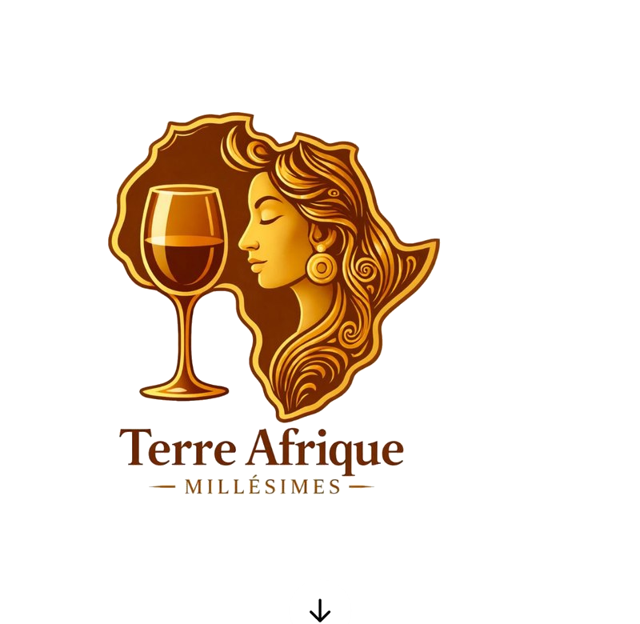

Los precios se muestran en euros y, para la exportación, en FCFA. Tipo de cambio fijo : 1 € = 655,957 FCFA. Los precios de exportación se entienden sin impuestos de Francia — régimen de exportación, IVA exento conforme al artículo 262 del CGI.
Acondicionamiento en cajas isotérmicas, transporte en camión frigorífico regulado a 15 °C constante. Tarifa unificada : 0,99 € HT por botella, facturada en adición al pedido. Plazo medio : 2 a 5 días hábiles en Francia metropolitana. Unión Europea y Córcega, previa solicitud de presupuesto. Tasa de rotura del socio VITICOLIS inferior al 0,15 % — seguro de transporte incluido.
Particulares : pago al realizar el pedido con tarjeta bancaria (Stripe / PayPal). HoReCa : 30 días fin de mes con acuerdo previo. Exportación África : 100 % al realizar el pedido por transferencia SWIFT.
Cantidad mínima : 10 cajas mixtas (60 botellas mínimo). Incoterm EXW Versailles por defecto, otros incoterms bajo petición. Países cubiertos : Camerún, Costa de Marfil, Senegal, Gabón. Plazo de entrega : 4 a 8 semanas según destino y trámites aduaneros.
Los derechos de aduana, tasas de importación y trámites son de cargo exclusivo del cliente en destino. Los gastos de transporte de exportación son también de cargo del cliente.
Las mercancías siguen siendo propiedad de Terre Afrique et Millésimes hasta el pago íntegro del precio.
A partir del día 10 tras la puesta a disposición, podrán aplicarse gastos de almacenamiento de 25 € HT por semana y por palé.
El abuso del alcohol es peligroso para la salud. Consuma con moderación.
Prohibida la venta de alcohol a menores. El comprador declara ser mayor de 18 años.
Las presentes condiciones se rigen por el derecho francés. Cualquier litigio será de competencia exclusiva de los tribunales de Versailles.